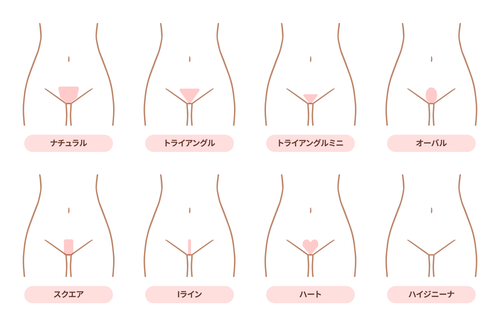

VIO脱毛・ハイジニーナ脱毛
今や一般的になりつつあるVIO脱毛
でも
デリケートな部分だから
人に見られたくない…
自己処理では毛がチクチクしたり
肌荒れが心配…
そんな方にオススメなのが
セルフ脱毛です！
セルフ脱毛では価格もリーズナブルに
誰にも見られずにVIO脱毛を
行っていただけます！
好きな形に整えることができ理想の
VIOを手に入れることができます！
初回限定
＼ 無料キャンペーン実施中！／
そもそもVIOってどこ？
Vライン
逆三角形のV字をした部分
Iライン
陰部の両側の縦のライン
Oライン
肛門（お尻の穴）周辺の部分
＼ VIO脱毛はこんな方にオススメ！ ／
- デリケートゾーンを清潔に保ちたい
- 生理中のムレやニオイを改善したい
- 自己処理の手間、肌荒れから解放されたい
- 下着や水着をキレイに着こなしたい
- 将来の妊娠や出産、介護に備えたい

初回限定
＼ 無料キャンペーン実施中！／
VIO脱毛のメリット
デリケートゾーンを清潔に保てる
排泄物が陰部に付着しづらくなりデリケートゾーンを清潔に保ちやすくなります。ムレも生じにくくなりニオイや生理時の肌トラブル対策としても◎
自己処理の手間がなくなる
時間も手間もかかるVIOの自己処理の手間が省け、粘膜や肌を傷つけるリスクもなくなります
肌がキレイになる
自己処理の回数が減りカミソリ負けや出血などの肌トラブルが激減します。肌を刺激することも少なくなるためシミや黒ずみも目立ちにくくなります
下着や水着をキレイに着こなせる
VIO脱毛でしっかり毛を整えれば、自分好みの下着や水着を選ぶ自由度が増えます。下着や水着から不意に毛がはみ出る心配もなくなります
将来の妊娠や出産、介護に備えることができる
妊娠中の検診や出産時の会陰切開などに備えることができます。また将来ご自身が介護を 受けることになった時に 介護者の負担を減らすことにもつながります
VIO脱毛のデメリット
効果が出るまで時間がかかる
VIOは毛が太く毛量も多いことから他の部位に比べて効果を感じるまでに時間がかかります。脱毛完了までの照射回数も他の部位より多くかかります
来店回数を詰めていただくことで早く効果を感じていただけます
他の部位より痛みを感じやすい
VIOは皮膚が薄く、さらに毛は多く太いので他の部位よりも脱毛時の痛みを感じやすいといわれています
照射レベルを調整したり冷却しながら行うことでかなり痛みが和らぎます
脱毛後の肌トラブルが起こりやすい
デリケートゾーンは皮膚が弱いことや下着との摩擦、雑菌が繁殖しやすい部位であることから照射による赤みやかゆみ、毛嚢炎などの肌トラブルが起こりやすい部位です
脱毛後の冷却や保湿、日常の保清を心がけることでで肌トラブルのリスクを軽減できます
元の状態に戻せない
脱毛をすると元の状態に戻すことができません。特にハイジニーナはすべて無毛にしてしまったあとではやり直しができません
将来的なことも考慮し、事前にしっかりとデザインを決めてから脱毛を行いましょう
初回限定
＼ 無料キャンペーン実施中！／
K.EMUでVIOを
セルフ脱毛するメリット
初回限定
＼ 無料キャンペーン実施中！／
VIOの形・デザイン
VIO脱毛には、無毛のハイジニーナを含めてさまざまなデザインや形があります。特に一般的なのは、次のデザインです。市販の「アンダースタイルガイド」というものを使って整えていただくことでキレイに仕上げることができます
VIOセルフ脱毛のやり方
VIOはデリケートな部分ですので無理をせずレベル1から照射を行い、様子を見て徐々に出力を上げていきましょう。痛みが強い時は、出力を下げたり冷却しながら行うことで痛みを和らげることができます。
【Vラインの照射】椅子に座って足を開くなど楽な姿勢で
Vラインは見やすいため脱毛も比較的簡単に行えます。立位または椅子に座って足を開くなど楽な姿勢で行ってください
【Iラインの照射】ショーツをTバックのように食い込ませて粘膜を保護しながら。片膝をつきながら、または立位で
Iラインは皮膚が薄いため脱毛時の痛みが強く出ることがあります。粘膜にダメージを与えないようにショーツをTバックのように食い込ませ粘膜を保護しながら照射するのがオススメです。床に鏡を置いて片膝をついて反対の膝を立てながら、もしくは椅子に片足を乗せて直接目視など自分が見やすく安定したポーズで照射していきます。
【Oラインの照射】うんこ座りなど大胆な姿勢で
Oラインも皮膚が薄く痛みを感じやすい部位です。床に寝かせた鏡の上にまたがって深くしゃがみ（うんこ座り）照射、もしくは椅子に片足を乗せて立ちお尻を持ち上げるように広げ、後ろの鏡で確認しながら照射しましょう。
最初は恥ずかしいかもしれませんが、誰にも見られていないので大丈夫です。大胆な姿勢で安全に照射しましょう。
初回限定
＼ 無料キャンペーン実施中！／